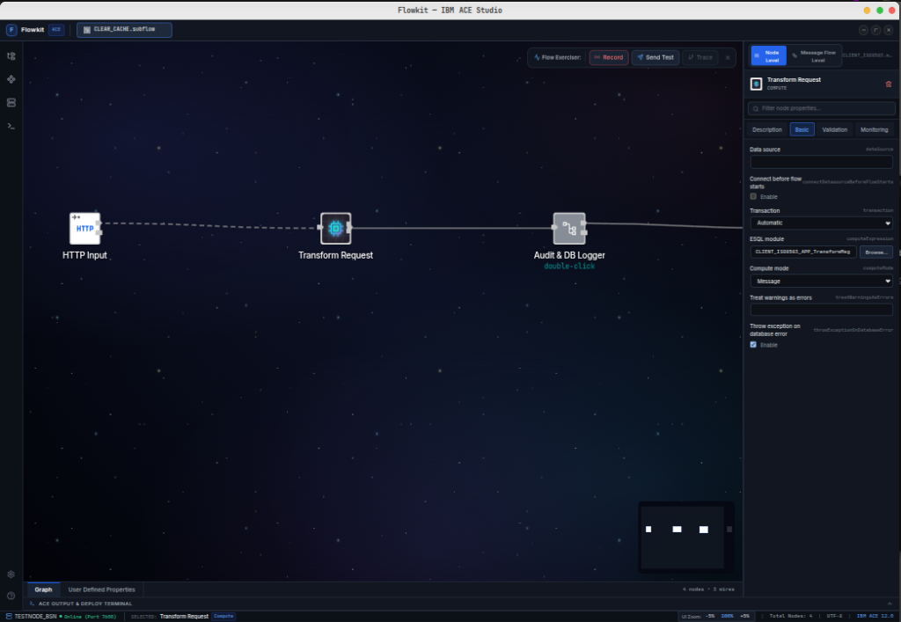
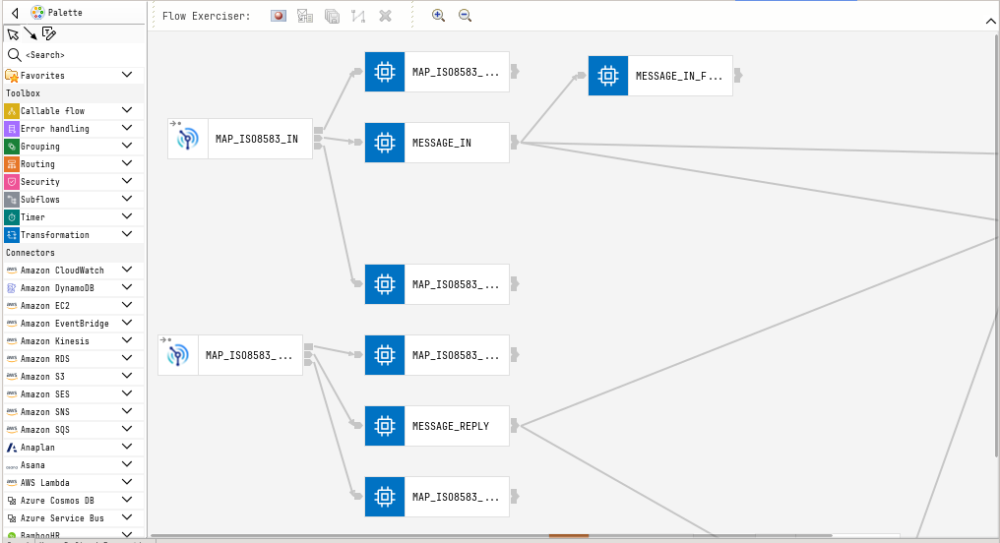
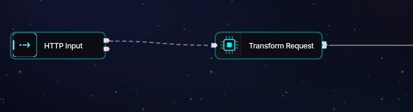

Replace the heavyweight, memory-hungry Eclipse Toolkit. Flowkit delivers a modern, standalone visual studio with native Monaco ESQL IntelliSense, live Integration Server management, and gesture-driven canvas navigation.

Crafted with Precision for Everyday ACE Workflows
Keep complex message flow graphs impeccably organized without tedious pixel dragging. Select any number of nodes and right-click to instantly trigger context alignment:

Directly control local and remote IBM ACE instances using the native Admin REST API v2 without jumping to web browsers or running command-line scripts:
Readability meets fluid navigation. Nodes adapt seamlessly to long naming conventions, and canvas navigation feels as natural as modern Figma or VSCode:

Precompiled, obfuscated, and standalone desktop installers. No node_modules, no manual setup, and no source code tarballs.
flowkit_0.1.0_amd64.deb
Official package for Ubuntu 20.04/22.04/24.04, Debian 11/12, and Linux Mint.
Flowkit-0.1.0.AppImage
Standalone portable binary that runs out of the box on Fedora, Arch, RHEL, and SUSE.
Flowkit Setup 0.1.0.exe
Official NSIS one-click desktop installer for Windows 10 and Windows 11 (64-bit).
Flowkit-0.1.0.dmg
Universal disk image bundle for Apple Silicon (M1/M2/M3/M4) & Intel Macs.